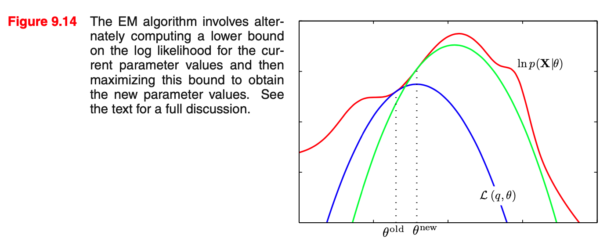
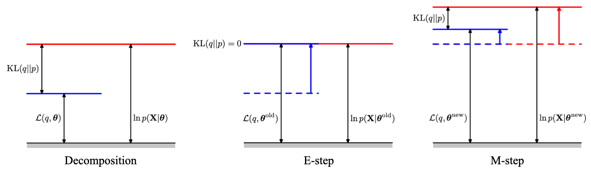

EM Algorithm
EM 算法是极大似然法的推广，用于解决存在隐变量（hidden variables / latent factors）的参数估计问题。
问题描述
极大似然法是最常用的参数估计方法之一。设观测样本集为 \(\{\mathbf x_n\}_{n=1}^N\)，模型参数为 \(\theta\)，则对数似然为： \[ L(\theta)=\log\prod_{n=1}^Np_\theta(\mathbf x_n)=\sum_{n=1}^N\log p_\theta(\mathbf x_n) \] 然而在一些问题中，观测样本 \(\mathbf x_n\) 依赖于隐变量 \(\mathbf z_n\)，此时根据全概率公式有： \[ p_\theta(\mathbf x_n)=\int p_\theta(\mathbf x_n,\mathbf z_n)\mathrm d\mathbf z_n \] 于是对数似然为： \[ L(\theta)=\sum_{n=1}^N\log p_\theta(\mathbf x_n)=\sum_{n=1}^N\log\left(\int p_\theta(\mathbf x_n,\mathbf z_n)\mathrm d\mathbf z_n\right) \] 如果直接求该式极值，我们会发现 \(L(\theta)\) 的导数非常复杂，往往无法写出封闭解。这时就需要用到 EM 算法了。
理论推导
为了解决上述问题，我们为隐变量 \(\mathbf z_n\) 引入一个概率分布 \(q_n(\mathbf z_n)\)，则对数似然可改写作： \[ L(\theta)=\sum_{n=1}^N\log\left(\int p_\theta(\mathbf x_n,\mathbf z_n)\mathrm d\mathbf z_n\right)=\sum_{n=1}^N\log\left(\int q_n(\mathbf z_n)\frac{p_\theta(\mathbf x_n,\mathbf z_n)}{q_n(\mathbf z_n)}\mathrm d\mathbf z_n\right) \] 应用 Jensen 不等式，得： \[ \begin{align} L(\theta)&\geq\sum_{n=1}^N\int q_n(\mathbf z_n)\log\frac{p_\theta(\mathbf x_n,\mathbf z_n)}{q_n(\mathbf z_n)}\mathrm d\mathbf z_n\\ &=\sum_{n=1}^N\underbrace{\mathbb E_{\mathbf z_n\sim q_n}[\log p_\theta(\mathbf x_n,\mathbf z_n)]+\mathbb H[q_n]}_{J(\theta,q_n)}\\ &=\sum_{n=1}^NJ(\theta,q_n)=\text{ELBO}(\theta,\{q_n\}) \end{align} \] 于是我们找到了对数似然的下界，称作证据下界 (Evidence Lower BOund, ELBO)。进一步，根据 Jensen 不等式的取等条件可知，当 \(q_n(\mathbf z_n)=p_\theta(\mathbf z_n\vert\mathbf x_n)\) 时等号成立。这说明 ELBO 不仅是 \(L(\theta)\) 的下界，还是紧的下界，因此优化 ELBO 与优化 \(L(\theta)\) 是等价的： \[ \max_\theta~L(\theta)\iff\max_{\theta,\{q_n\}}~\text{ELBO}(\theta,\{q_n\}) \] 至此，我们将最大化对数似然转化为了最大化 ELBO. 然而，这样做的代价是原本只需要优化一个变量 \(\theta\)，现在要优化两个变量 \(\theta\) 和 \(\{q_n\}\). 同时优化二者比较困难，因此 EM 算法采用交替迭代的方式优化： \[ \max_{\theta,\{q_n\}}~\text{ELBO}(\theta,\{q_n\})\implies \begin{cases} \max\limits_{\{q_n\}}~\text{ELBO}(\theta,\{q_n\})&\textbf{E-step}\\ \max\limits_{\theta}~\text{ELBO}(\theta,\{q_n\})&\textbf{M-step} \end{cases} \] 具体而言，在 E-step 中，对于固定的 \(\theta\)，我们优化 \(\{q_n\}\)： \[ \max_{\{q_n\}}~\text{ELBO}(\theta,\{q_n\})=\sum_{n=1}^NJ(\theta,q_n) \] 这等价于对每个 \(n\) 单独优化： \[ \max_{q_n}~J(\theta,q_n),\quad n=1,2,\ldots,N \] 根据前文的讨论，其最优解就是取： \[ q_n(\mathbf z_n)=p_{\theta}(\mathbf z_n\vert\mathbf x_n),\quad n=1,2,\ldots,N \] 使得 ELBO 与对数似然相等。在 M-step 中，对于固定的 \(\{q_n\}\)，我们优化 \(\theta\)： \[ \max_\theta~\text{ELBO}(\theta,\{q_n\})=\sum_{n=1}^NJ(\theta,q_n) \] 回顾 \(J(\theta,q_n)=\mathbb E_{\mathbf z_n\sim q_n}[\log p_\theta(\mathbf x_n,\mathbf z_n)]+\mathbb H[q_n]\)，其中第二项与 \(\theta\) 无关，因此只需优化第一项： \[ \max_\theta~\sum_{n=1}^N\mathbb E_{\mathbf z_n\sim q_n}[\log p_\theta(\mathbf x_n,\mathbf z_n)] \] 迭代执行 E-step 与 M-step 直至收敛即可。下图可视化了这样一轮迭代过程：

可以看见，红色线条是要优化的目标，蓝色线条是在当前 E-step 找到的下界，在 \(\theta^\text{old}\) 处取到等号；随后 M-step 找到蓝色线条的最高点，将 \(\theta^\text{old}\) 更新为 \(\theta^\text{new}\)；接着下一轮的 E-step 优化 \(\{q_n\}\) 使得下界在 \(\theta^\text{new}\) 处与红色线条相等，即得到绿色线条……以此类推，最终即可找到红色线条的最高点。
面对这样的迭代算法，我们立刻会问一个问题：算法一定收敛吗？这里的收敛其实包含两层意思：目标函数 \(L(\theta)\) 收敛和参数 \(\theta\) 收敛，前者并不能推出后者。我们首先说明 \(L(\theta)\) 收敛。假设当前在第 \(t\) 次迭代，已有 \(\theta^{(t)},\{q_n^{(t)}\}\)，则在 E-step 中，我们会更新 \(\{q_n^{(t)}\}\to\{q_n^{(t+1)}\}\) 以使得： \[ \text{ELBO}(\theta^{(t)},\{q_n^{(t+1)}\})=L(\theta^{(t)}) \] 接下来在 M-step 中，我们更新 \(\theta^{(t)}\to\theta^{(t+1)}\) 使得 ELBO 变大： \[ \text{ELBO}(\theta^{(t+1)},\{q_n^{(t+1)}\})\geq\text{ELBO}(\theta^{(t)},\{q_n^{(t+1)}\}) \] 由于 \(\theta\) 进行了更新，此时： \[ L(\theta^{(t+1)})\geq\text{ELBO}(\theta^{(t+1)},\{q_n^{(t+1)}\}) \] 结合以上三式，在经过一轮 E-step 和 M-step 后，有： \[ L(\theta^{(t+1)})\geq \text{ELBO}(\theta^{(t+1)},\{q^{(t+1)}\})\geq \text{ELBO}(\theta^{(t)},\{q^{(t+1)}\})=L(\theta^{(t)}) \] 故 \(L(\theta)\) 单调不减。若假设 \(p_\theta(\mathbf x_n)\) 有上界，则根据单调有界定理知 \(L(\theta)\) 必然收敛。对参数 \(\theta\) 收敛的证明则更为复杂，见文献 (Wu, 1983)。需要注意的是，虽然 EM 算法一定收敛，但是可能收敛到局部最优解，收敛结果取决于初始化的情况。
总结一下 EM 算法的步骤：
随机初始化参数 \(\theta\)；
E-step. 计算隐变量的概率分布： \[q_n(\mathbf z_n)=p_\theta(\mathbf z_n\vert\mathbf x_n),\quad n=1,\ldots,N\]
M-step. 求解优化问题： \[\max_\theta~\sum_{n=1}^N\mathbb E_{\mathbf z_n\sim q_n}[\log p_\theta(\mathbf x_n,\mathbf z_n)]\]
迭代执行第 2、3 步直至收敛。
进一步分析
在上一节中，我们推出了 \(L(\theta)\geq \text{ELBO}(\theta,\{q_n\})\)，那他俩之间究竟差了个什么呢？ \[ \begin{align} L(\theta)-\text{ELBO}(\theta,\{q_n\})&=\sum_{n=1}^N\left(\log p_\theta(\mathbf x_n)-\int q_n(\mathbf z_n)\log\frac{p_\theta(\mathbf x_n,\mathbf z_n)}{q_n(\mathbf z_n)}\mathrm d\mathbf z_n\right)\\ &=\sum_{n=1}^N\int q_n(\mathbf z_n)\left(\log p_\theta(\mathbf x_n)-\log\frac{p_\theta(\mathbf x_n,\mathbf z_n)}{q_n(\mathbf z_n)}\right)\mathrm d\mathbf z_n\\ &=\sum_{n=1}^N\int q_n(\mathbf z_n)\log \frac{q_n(\mathbf z_n)}{p_\theta(\mathbf z_n\vert \mathbf x_n)}\mathrm d\mathbf z_n\\ &=\sum_{n=1}^N\mathrm{KL}(q_n(\mathbf z_n)\|p_\theta(\mathbf z_n\vert \mathbf x_n)) \end{align} \] 原来是 \(q_n(\mathbf z_n)\) 与 \(p_\theta(\mathbf z_n\vert\mathbf x_n)\) 之间的 KL 散度。上一节推导过程中使用的 Jensen 不等式，正对应着这里的 KL 散度非负。
事实上，我们能避开 Jensen 不等式直接推导出上述结果，过程如下所示： \[ \begin{align} L(\theta)&=\sum_{n=1}^N\log p_\theta(\mathbf x_n)\\ &=\sum_{n=1}^N\int q_n(\mathbf z_n)\log p_\theta(\mathbf x_n)\mathrm d\mathbf z_n\\ &=\sum_{n=1}^N\int q_n(\mathbf z_n)\log\left(\frac{p_\theta(\mathbf x_n,\mathbf z_n)}{p_\theta(\mathbf z_n\vert \mathbf x_n)}\cdot\frac{q_n(\mathbf z_n)}{q_n(\mathbf z_n)} \right)\mathrm d\mathbf z_n\\ &=\sum_{n=1}^N\int q_n(\mathbf z_n)\left(\log\frac{p_\theta(\mathbf x_n,\mathbf z_n)}{q_n(\mathbf z_n)}+\log\frac{q_n(\mathbf z_n)}{p_\theta(\mathbf z_n\vert\mathbf x_n)}\right)\mathrm d\mathbf z_n\\ &=\text{ELBO}(\theta,\{q_n\})+\sum_{n=1}^N\mathrm{KL}(q_n(\mathbf z_n)\|p_\theta(\mathbf z_n\vert\mathbf x_n)) \end{align} \] 可以看见，\(L(\theta)\) 由两部分组成——ELBO 和 KL 散度。基于这个角度，我们重新审视 EM 算法：
- 在 E-step 中，固定 \(\theta\) 并取 \(q_n(\mathbf z_n)=p_\theta(\mathbf z_n\vert\mathbf x_n)\)，使得 KL 项取零，也即让 \(L(\theta)=\text{ELBO}(\theta,\{q_n\})\)；
- 在 M-step 中，固定 \(\{q_n\}\) 优化 \(\text{ELBO}(\theta,\{q_n\})\)，进而优化了 \(L(\theta)\)；
- 这时由于 \(\theta\) 变了，KL 散度不再是零，我们便继续下一轮迭代。
此过程如下图所示：

例1·双硬币问题
此例来源于 (Do & Batzoglou, 2008).
假设有两枚硬币 A,B，它们正面朝上的概率未知，分别记作 \(\theta_A,\theta_B\). 为了估计 \(\theta_A,\theta_B\)，考虑做如下试验：首先等概率地随机选取一枚硬币，然后抛掷这枚硬币 10 次。假设我们一共做了 5 次试验，得到的结果如下：
| 试验 id | 选取的硬币 | 试验结果 |
|---|---|---|
| 1 | B | 5 H, 5 T |
| 2 | A | 9 H, 1 T |
| 3 | A | 8 H, 2 T |
| 4 | B | 4 H, 6 T |
| 5 | A | 7 H, 3 T |
可以看见，综合 5 次试验，硬币 A 一共 24 次正面朝上、6 次反面朝上，硬币 B 一共 9 次正面朝上、11 次反面朝上，所以 \(\theta_A,\theta_B\) 的估计值为： \[ \begin{align} &\hat\theta_A=24/30=0.8\\ &\hat\theta_B=9/20=0.45 \end{align} \] 值得注意的是，虽然这个结果直观上很容易理解，但本质上是极大似然估计。具体而言，其对数似然为： \[ \begin{align} L(\theta_A,\theta_B)&=\log\left[p_{\theta_A}(24H,6T)\cdot p_{\theta_B}(9H,11T)\right]\\ &=\log\left[(\theta_A)^{24}(1-\theta_A)^6\right]+\log\left[(\theta_B)^9(1-\theta_B)^{11}\right]\\ &=24\log(\theta_A)+6\log(1-\theta_A)+9\log(\theta_B)+11\log(1-\theta_B) \end{align} \] 分别对 \(\theta_A,\theta_B\) 求导并令为零，有： \[ \begin{gather} \frac{24}{\theta_A}-\frac{6}{1-\theta_A}=0\implies\hat\theta_A=\frac{24}{30}\\ \frac{9}{\theta_B}-\frac{11}{1-\theta_B}=0\implies\hat\theta_B=\frac{9}{20} \end{gather} \] 现在考虑一个更有挑战性的问题——我们并不知道每一次试验选的是哪枚硬币，只知道投掷结果，即：
| 试验 id | 选取的硬币 | 试验结果 |
|---|---|---|
| 1 | \(z_1=?\) | 5 H, 5 T \((x_1=5)\) |
| 2 | \(z_2=?\) | 9 H, 1 T \((x_2=9)\) |
| 3 | \(z_3=?\) | 8 H, 2 T \((x_3=8)\) |
| 4 | \(z_4=?\) | 4 H, 6 T \((x_4=4)\) |
| 5 | \(z_5=?\) | 7 H, 3 T \((x_5=7)\) |
其中 \(x_n\) 表示第 \(n\) 次试验中正面朝上的次数，\(z_n\in\{A,B\}\) 表示选取的硬币，是问题中的隐变量。这时就需要应用 EM 算法了。首先随机初始化参数，不妨取 \(\theta^{(0)}=(\theta_A^{(0)},\theta_B^{(0)})=(0.60,0.50)\)；随后，在 E-step 中，我们对每一次试验 \(n=1,2,3,4,5\)，计算 \(q_n(z_n)=p_\theta(z_n\vert x_n)\). 以第一次试验为例： \[ \begin{align} &q_1(z_1=A)=p_\theta(z_1=A\vert x_1)=\frac{p_\theta(z_1=A,x_1)}{p_\theta(x_1)}=\frac{(0.6)^5\times (0.4)^5}{(0.6)^5\times (0.4)^5+(0.5)^{10}}=0.45\\ &q_1(z_1=B)=1-q_1(z_1=A)=0.55 \end{align} \] 然后，在 M-step 中，固定 \(\{q_n\}\)，最大化下式： \[ \begin{align} Q(\theta,\{q_n\})&=\sum_{n=1}^5\mathbb E_{z_n\sim q_n}[\log p_\theta(x_n,z_n)]\\ &=\sum_{n=1}^5\left[q_n(z_n=A)\log p_\theta(z_n=A,x_n)+q_n(z_n=B)\log p_\theta(z_n=B,x_n)\right]\\ &=\sum_{n=1}^5\left[q_n(z_n=A)\log\left(\theta_A^{x_n}(1-\theta_A)^{10-x_n}\right)+q_n(z_n=B)\log\left(\theta_B^{x_n}(1-\theta_B)^{10-x_n}\right)\right] \end{align} \] 对 \(\theta_A\) 求导并令为零： \[ \frac{\partial Q}{\partial \theta_A}=\sum_{n=1}^5 q_n(z_n=A)\left(\frac{x_n}{\theta_A}-\frac{10-x_n}{1-\theta_A}\right)=0 \] 解得： \[ \theta_A=\frac{\sum_{n=1}^5q_n(z_n=A)x_n}{10\sum_{n=1}^5q_n(z_n=A)}=\frac{2.25+7.2+5.84+1.4+4.55}{10\times(0.45+0.80+0.73+0.35+0.65)}\approx0.71 \] 同理可解 \(\theta_B\)，这就完成了一次迭代。反复执行 E-step 与 M-step 直至收敛即可。
例2·高斯混合模型
设有 \(K\) 个 \(d\) 维高斯分布： \[ \phi(\mathbf x;\boldsymbol\mu_k,\mathbf \Sigma_k)=\frac{1}{(2\pi)^{d/2}|\mathbf \Sigma_k|^{1/2} }\exp\left(-\frac{1}{2}(\mathbf x-\boldsymbol\mu_k)^\mathsf T\mathbf\Sigma_k^{-1}(\mathbf x-\boldsymbol\mu_k)\right),\quad k=1,\ldots,K \] 假设样本集 \(\{\mathbf x_1,\ldots,\mathbf x_N:\mathbf x_n\in\mathbb R^d\}\) 是由如下过程产生的：首先随机选取一个高斯分布（第 \(k\) 个高斯分布被选中的概率是 \(\alpha_k\)，其中 \(\sum_{k=1}^K\alpha_k=1\)），再从被选中的高斯分布中采样。这被称作高斯混合模型 (GMM). 试估计这 \(K\) 个高斯分布的参数 \(\theta=\{(\alpha_k,\boldsymbol\mu_k,\mathbf \Sigma_k)\mid k=1,\ldots,K\}\).
与双硬币问题非常相似，这个问题中我们不知道每次采样究竟选取的是哪个高斯分布，所以可以定义隐变量 \(z_n\in\{1,\ldots,K\}\) 表示第 \(n\) 个样本来自哪个高斯分布，并使用 EM 算法求解：
E-step. 固定 \(\theta\)，计算 \(q_n\)： \[ q_n(z_n=k)=p_\theta(z_n=k\vert\mathbf x_n)=\frac{p_\theta(\mathbf x_n,z_n=k)}{p_\theta(\mathbf x_n)}=\frac{\alpha_k\phi(\mathbf x_n;\boldsymbol\mu_k,\mathbf\Sigma_k)}{\sum_{j=1}^K\alpha_j\phi(\mathbf x_n;\boldsymbol\mu_j,\mathbf\Sigma_j)},\quad k=1,\ldots,K \]
为书写方便，以下将其简记为 \(q_{nk}\).
M-step. 固定 \(\{q_n\}\)，计算优化目标： \[ \begin{align} Q(\theta)&=\sum_{n=1}^N\sum_{k=1}^Kq_{nk}\log p_\theta(\mathbf x_n,z_n=k)\\ &=\sum_{n=1}^N\sum_{k=1}^Kq_{nk}\log\left(\alpha_k\phi(\mathbf x_n;\boldsymbol\mu_k,\mathbf\Sigma_k)\right)\\ &=\sum_{n=1}^N\sum_{k=1}^Kq_{nk}\left[\log\alpha_k+\log\phi(\mathbf x_n;\boldsymbol\mu_k,\mathbf\Sigma_k)\right] \end{align} \] 首先解 \(\alpha\)：结合条件 \(\sum_{k=1}^K\alpha_k=1\)，去掉 \(Q(\theta)\) 中与 \(\alpha\) 无关的部分，优化问题化作： \[ \begin{align} \max_\theta&\quad\sum_{n=1}^N\sum_{k=1}^Kq_{nk}\log\alpha_k\\ \text{ s.t. }&\quad\sum_{k=1}^K\alpha_k=1 \end{align} \] 构造 Lagrange 函数： \[ L(\theta)=\sum_{n=1}^N\sum_{k=1}^Kq_{nk}\log\alpha_k+\lambda\left(\sum_{k=1}^K\alpha_k-1\right) \] 求导并令为零： \[ \frac{\partial L}{\partial \alpha_k}=\sum_{n=1}^N\frac{q_{nk}}{\alpha_k}+\lambda=0,\quad k=1,\ldots,K \] 解得： \[ \alpha_k=\frac{1}{n}\sum_{n=1}^Nq_{nk},\quad k=1,\ldots,K \] 下面解 \(\boldsymbol\mu\)：去掉 \(Q(\theta)\) 中与 \(\boldsymbol\mu\) 无关的部分，优化目标化作： \[ \begin{align} Q(\theta)&\to\sum_{n=1}^N\sum_{k=1}^Kq_{nk}\log\phi(\mathbf x_n;\boldsymbol\mu_k,\mathbf\Sigma_k)\\ &=\sum_{n=1}^N\sum_{k=1}^K q_{nk}\left(\log\frac{1}{ {(\sqrt{2\pi})}^d|\mathbf\Sigma_k|^{1/2} }-\frac{1}{2}(\mathbf x_n-\boldsymbol\mu_k)^\mathsf T\mathbf\Sigma_k^{-1}(\mathbf x_n-\boldsymbol\mu_k)\right)\\ &\to\sum_{n=1}^N\sum_{k=1}^K q_{nk}\left(\frac{1}{2}(\mathbf x_n-\boldsymbol\mu_k)^\mathsf T\mathbf\Sigma_k^{-1}(\mathbf x_n-\boldsymbol\mu_k)\right)=\mathrel{\vcenter{:}}Q'(\theta) \end{align} \] 求导并令为零： \[ \frac{\partial Q'}{\partial \boldsymbol\mu_k}=\sum_{n=1}^Nq_{nk}\mathbf\Sigma_k^{-1}(\mathbf x_n-\boldsymbol\mu_k)=\mathbf\Sigma_k^{-1}\sum_{n=1}^Nq_{nk}(\mathbf x_n-\boldsymbol\mu_k)=\mathbf 0 \] 解得： \[ \boldsymbol\mu_k=\frac{\sum_{n=1}^Nq_{nk}\mathbf x_n}{\sum_{n=1}^N q_{nk}},\quad k=1,\ldots,K \] 最后解 \(\mathbf\Sigma\)：去掉 \(Q(\theta)\) 中与 \(\mathbf\Sigma\) 无关的部分，优化目标化作： \[ \begin{align} Q(\theta)&\to\sum_{n=1}^N\sum_{k=1}^Kq_{nk}\log\phi(\mathbf x_n;\boldsymbol\mu_k,\mathbf\Sigma_k)\\ &=\sum_{n=1}^N\sum_{k=1}^K q_{nk}\left(\log\frac{1}{ {(\sqrt{2\pi})}^d}-\frac{1}{2}\log|\mathbf\Sigma_k|-\frac{1}{2}(\mathbf x_n-\boldsymbol\mu_k)^\mathsf T\mathbf\Sigma_k^{-1}(\mathbf x_n-\boldsymbol\mu_k)\right)\\ &\to\sum_{n=1}^N\sum_{k=1}^K q_{nk}\left(\log|\mathbf\Sigma_k|+(\mathbf x_n-\boldsymbol\mu_k)^\mathsf T\mathbf\Sigma_k^{-1}(\mathbf x_n-\boldsymbol\mu_k)\right)=\mathrel{\vcenter{:}}Q''(\theta) \end{align} \] 求导并令为零： \[ \begin{align}\frac{\partial Q''}{\partial \mathbf\Sigma_k}&=\sum_{n=1}^Nq_{nk}\left(\mathbf\Sigma_k^{-1}-(\mathbf x_n-\boldsymbol\mu_k)(\mathbf x_n-\boldsymbol\mu_k)^\mathsf T\mathbf\Sigma_{k}^{-2} \right)=\mathbf 0 \end{align} \] 解得： \[ \mathbf\Sigma_k=\frac{\sum_{n=1}^Nq_{nk}(\mathbf x_n-\boldsymbol\mu_k)(\mathbf x_n-\boldsymbol\mu_k)^\mathsf T}{\sum_{n=1}^Nq_{nk}},\quad k=1,\ldots,K \]
总结一下，用 EM 算法求解 GMM 模型的步骤如下：
随机初始化模型参数 \(\alpha_k,\boldsymbol\mu_k,\mathbf\Sigma_k,\,k=1,\ldots,K\).
E-step. 计算隐变量的概率分布： \[q_{nk}=\frac{\alpha_k\phi(\mathbf x_n;\boldsymbol\mu_k,\mathbf\Sigma_k)}{\sum_{j=1}^K\alpha_j\phi(\mathbf x_n;\boldsymbol\mu_j,\mathbf\Sigma_j)},\quad n=1,\ldots,N,\;k=1,\ldots,K\]
M-step. 更新参数： \[\begin{align}&\alpha_k\gets\frac{1}{n}{\sum_{n=1}^Nq_{nk}}&& k=1,\ldots,K\\&\boldsymbol\mu_k\gets\frac{\sum_{n=1}^Nq_{nk}\mathbf x_n}{\sum_{n=1}^N q_{nk}}&& k=1,\ldots,K\\&\mathbf\Sigma_k\gets\frac{\sum_{n=1}^Nq_{nk}(\mathbf x_n-\boldsymbol\mu_k)(\mathbf x_n-\boldsymbol\mu_k)^\mathsf T}{\sum_{n=1}^Nq_{nk}}&& k=1,\ldots,K\end{align}\]
迭代执行第 2、3 步直至收敛。
一点注记
EM 算法在 E-step 要求我们能表达出隐变量的后验概率 \(q_n(\mathbf z_n)=p_\theta(\mathbf z_n\vert\mathbf x_n)\)，从上面两个例子可以看出，这可以通过贝叶斯公式计算： \[ p_\theta(\mathbf z_n\vert\mathbf x_n)=\frac{p_\theta(\mathbf x_n,\mathbf z_n)}{p_\theta(\mathbf x_n)}=\frac{p_\theta(\mathbf x_n\vert \mathbf z_n)p_\theta(\mathbf z_n)}{\sum_{\mathbf z_n'} p_\theta(\mathbf x_n\vert \mathbf z_n')p_\theta(\mathbf z_n')} \] 所以我们并没有避开计算似然 \(p_\theta(\mathbf x_n)\). 因此要明晰的一点是，阻碍我们直接使用极大似然法的不是计算似然，而是优化似然，即解令对数似然偏导为零后得到的那个方程组。这自然带来了一个问题，如果似然本身就是不可解 (intractable) 的，那么 EM 算法就做不下去了。例如，在 GMM 中，隐变量取值是离散的，表示样本来自于哪个高斯分布。倘若我们把高斯分布的数量不断变大乃至无穷，那么隐变量取值就变成连续的，上式分母变成了一个积分，无法通过枚举计算。为了解决这个问题，人们提出了变分推断的概念，我们在后面的文章中学习。
参考资料
- Kevin P. Murphy. Probabilistic Machine Learning: An Introduction. ↩︎
- Christopher Bishop. Pattern Recognition and Machine Learning. ↩︎
- 李航. 统计学习方法. ↩︎
- Wu, CF Jeff. On the convergence properties of the EM algorithm. The Annals of statistics (1983): 95-103. ↩︎
- Do, Chuong B., and Serafim Batzoglou. What is the expectation maximization algorithm?. Nature biotechnology 26, no. 8 (2008): 897-899. ↩︎
- Tengyu Ma and Andrew Ng. CS229 Lecture notes: The EM algorithm. https://cs229.stanford.edu/notes2021fall/cs229-notes8.pdf ↩︎
- 人人都懂EM算法 - August的文章 - 知乎 https://zhuanlan.zhihu.com/p/36331115 ↩︎
- 【机器学习】EM——期望最大（非常详细） - 阿泽的文章 - 知乎 https://zhuanlan.zhihu.com/p/78311644 ↩︎